Techniques displayed:
124
Search:
Keyword search list
Select All
A.1 Visual Representation
B. Visual Variables
C.1 Spatial-Temporal Information
C.2 Coordinates
D.1 Dimension
D.2 View
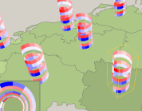
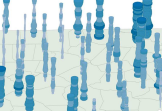
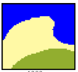
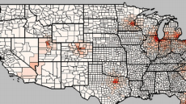
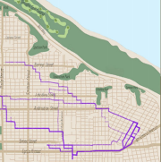
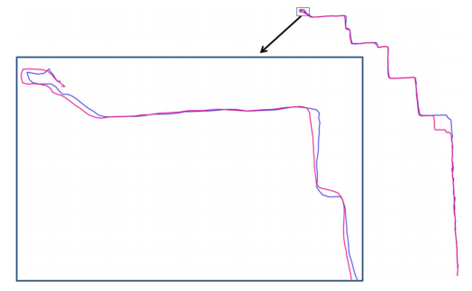
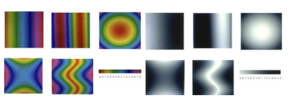
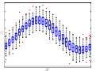
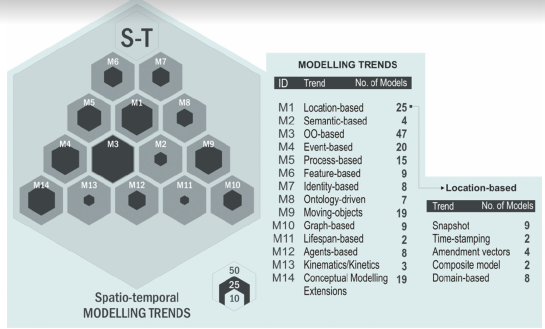
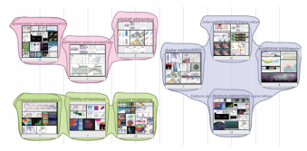
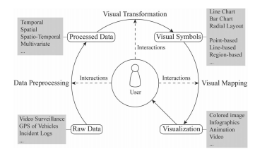
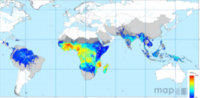
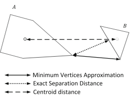
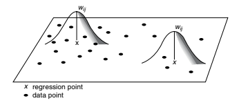
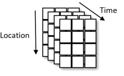
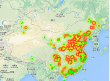
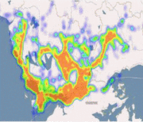
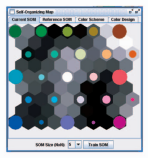
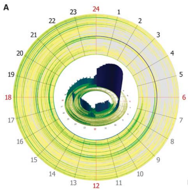
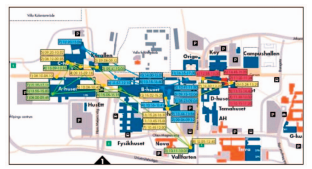
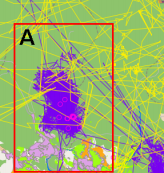
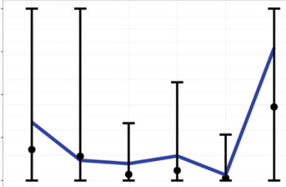
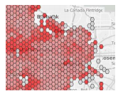
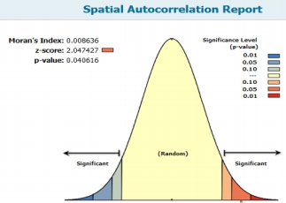
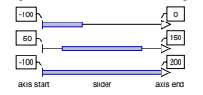
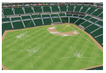
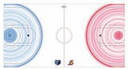
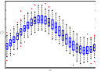
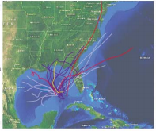
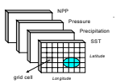
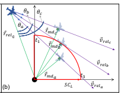
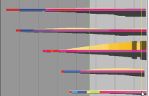
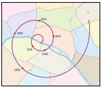
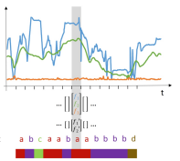
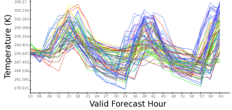
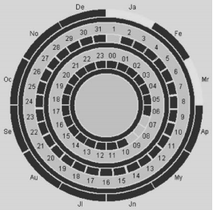
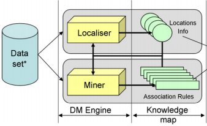
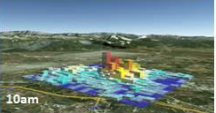
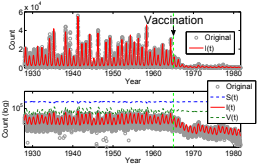
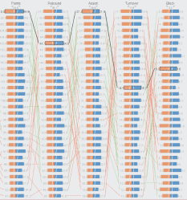
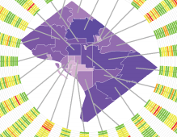
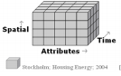
") 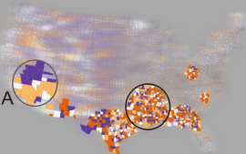
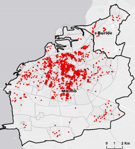
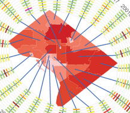
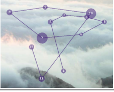
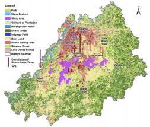
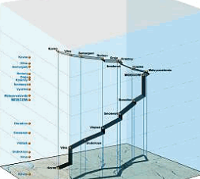
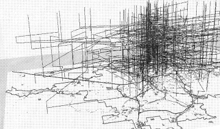
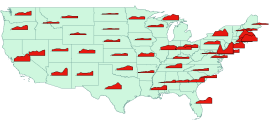
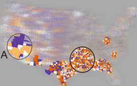
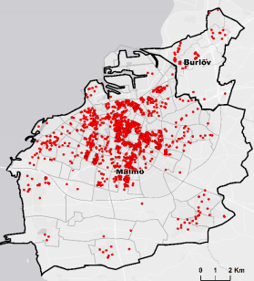
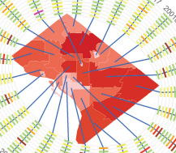
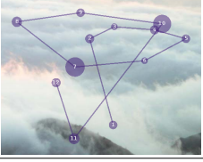
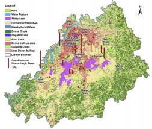
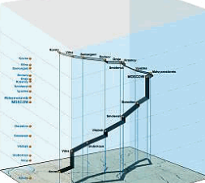
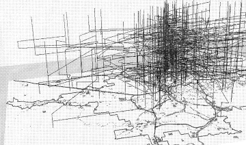
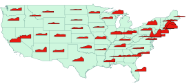
")
")
")
")
×
3D Information Visualization for Time Dependent Data on Maps(2005)
by Christian Tominski, Petra Schulze-Wollgast, Heidrun Schumann
C. Tominski, P. Schulze-Wollgast and H. Schumann, "3D information visualization for time dependent data on maps," Ninth International Conference on Information Visualisation (IV'05), London, UK, 2005, pp. 175-181, doi: 10.1109/IV.2005.3.
URL: https://doi.org/10.1109/IV.2005.3
BibTeX
Modal Footer
×
A 3D Visualization of Multiple Time Series on Maps(2010)
by Sidharth Thakur, Andrew J. Hanson
S. Thakur and A. J. Hanson, "A 3D Visualization of Multiple Time Series on Maps," 2010 14th International Conference Information Visualisation, London, 2010, pp. 336-343, doi: 10.1109/IV.2010.54.
URL: https://doi.org/10.1109/IV.2010.54
BibTeX
Modal Footer
×
A GIS-based Bayesian approach for analyzing spatial–temporal patterns of intra-city motor vehicle crashes(2007)
by Linhua Li, Li Zhu, Daniel Z. Sui
Journal of Transport Geography - http://www.sciencedirect.com/science/article/pii/S0966692306000901
URL: https://doi.org/10.1016/j.jtrangeo.2006.08.005
BibTeX
Modal Footer
×
A Hybrid Approach Combining the Multi-Temporal Scale Spatio-Temporal Network(2018)
by Pengdong Zhang, Jasper Beernaerts and Nico Van de Weghe
Zhang, P.; Beernaerts, J.; Van de Weghe, N. A Hybrid Approach Combining the Multi-Temporal Scale Spatio-Temporal Network with the Continuous Triangular Model for Exploring Dynamic Interactions in Movement Data: A Case Study of Football. ISPRS Int. J. Geo-Inf. 2018, 7, 31. https://doi.org/10.3390/ijgi7010031
URL: https://doi.org/10.3390/ijgi7010031
BibTeX
Modal Footer
×
A hybrid approach to detect spatial-temporal outliers(2004)
by T.Cheng, Zhilin Li
Proc. 12th Int. Conf. on Geoinformatics − Geospatial Information Research: Bridging the Pacific and Atlantic University of Gävle, Sweden, 7-9 June 2004
URL: A_hybrid_approach_to_detect_spatial-temporal_outliers
BibTeX
Modal Footer
×
A pandemic influenza modeling and visualization tool(2011)
by Ross Maciejewski, Philip Livengood, Stephen Rudolph
Journal of Visual Languages & Computing Volume 22, Issue 4, August 2011
URL: https://doi.org/10.1016/j.jvlc.2011.04.002
BibTeX
Modal Footer
×
A Review of Temporal Data Visualizations Based on Space-Time Cube Operations(2014)
by B. Bach, P. Dragicevic1, D. Archambault
HAL-Inria https://hal.inria.fr/hal-01006140/
URL: A_Review_of_Temporal_Data_Visualizations
BibTeX
Modal Footer
×
A semantic-enhanced trajectory visual analytics for digital forensic(2015)
by Zhi-fang Liao, Yong Li, Yanni Peng
Liao, Zf., Li, Y., Peng, Y. et al. A semantic-enhanced trajectory visual analytics for digital forensic. J Vis 18, 173–184 (2015). https://doi.org/10.1007/s12650-015-0276-z
URL: https://doi.org/10.1007/s12650-015-0276-z
BibTeX
Modal Footer
×
A Spatio-Temporal Entropy-based Framework for the Detection of Trajectories(2018)
by Amin Hosseinpoor Milaghardan, Rahim Ali Abbaspour
Hosseinpoor Milaghardan, A.; Ali Abbaspour, R.; Claramunt, C. A Spatio-Temporal Entropy-based Framework for the Detection of Trajectories Similarity. Entropy 2018, 20, 490. https://doi.org/10.3390/e20070490
URL: A_Spatio-Temporal_Entropy-based_Framework
BibTeX
Modal Footer
×
A Survey of Colormaps in Visualization(2015)
by Liang Zhou, Charles D. Hansen,
L. Zhou and C. D. Hansen, "A Survey of Colormaps in Visualization," in IEEE Transactions on Visualization and Computer Graphics, vol. 22, no. 8, pp. 2051-2069, 1 Aug. 2016, doi: 10.1109/TVCG.2015.2489649.
URL: https://doi.org/10.1109/TVCG.2015.2489649
BibTeX
Modal Footer
×
A survey of competitive sports data visualization and visual analysis(2020)
by Meng Du, Xiaoru Yuan
Du, M., Yuan, X. A survey of competitive sports data visualization and visual analysis. J Vis (2020). https://doi.org/10.1007/s12650-020-00687-2
URL: https://doi.org/10.1007/s12650-020-00687-2
BibTeX
Modal Footer
×
A Survey of Methods for Visualizing Spatio-temporal Data(2020)
by Mattias Persson
Independent thesis Advanced level (degree of Master (Two Years))
URL: Methods for Visualizing Spatio-temporal Data
BibTeX
Modal Footer
×
A Survey of Modelling Trends in Temporal GIS(2018)
by Willington Siabato, Christophe Claramunt, Sergio Ilarri
Willington Siabato, Christophe Claramunt, Sergio Ilarri, and Miguel Angel Manso-Callejo. 2018. A Survey of Modelling Trends in Temporal GIS. ACM Comput. Surv. 51, 2, Article 30 (June 2018), 41 pages. DOI:https://doi.org/10.1145/3141772
URL: http://dx.doi.org/10.1145/3141772
BibTeX
Modal Footer
×
A Survey of Multi-Space Techniques in Spatio-Temporal Simulation Data Visualization(2019)
by Xueyi Chen, Liming Shen, Ziqi Sha, Siming Chen
Visual Informatics Volume 3, Issue 3, September 2019 http://www.sciencedirect.com/science/article/pii/S2468502X19300452
URL: https://doi.org/10.1016/j.visinf.2019.08.002
BibTeX
Modal Footer
×
A Survey of Traffic Data Visualization(2015)
by Wei Chen, Fangzhou Guo, Fei-Yue Wang
W. Chen, F. Guo and F. Wang, "A Survey of Traffic Data Visualization," in IEEE Transactions on Intelligent Transportation Systems, vol. 16, no. 6, pp. 2970-2984, Dec. 2015, doi: 10.1109/TITS.2015.2436897.
URL: https://doi.org/10.1109/TITS.2015.2436897
BibTeX
Modal Footer
×
A Survey of Visual Analytics for Public Health(2020)
by Bernhard Preim, Kai Lawonn
2019 The Authors. Computer Graphics Forum published by Eurographics ‐ The European Association for Computer Graphics and John Wiley & Sons Ltd
URL: https://doi.org/10.1111/cgf.13891
BibTeX
Modal Footer
×
A Survey on Data Mining Methods for Clustering Complex Spatiotemporal Data(2017)
by Piotr S Maciag
Maciąg P.S. (2017) A Survey on Data Mining Methods for Clustering Complex Spatiotemporal Data. In: Kozielski S., Mrozek D., Kasprowski P., Małysiak-Mrozek B., Kostrzewa D. (eds) Beyond Databases, Architectures and Structures. Towards Efficient Solutions for Data Analysis and Knowledge Representation. BDAS 2017. Communications in Computer and Information Science, vol 716. Springer, Cham.
URL: https://doi.org/10.1007/978-3-319-58274-0_10
BibTeX
Modal Footer
×
A Survey on Spatial Prediction Methods(2018)
by Zhe Jiang
Z. Jiang, "A Survey on Spatial Prediction Methods," in IEEE Transactions on Knowledge and Data Engineering, vol. 31, no. 9, pp. 1645-1664, 1 Sept. 2019, doi: 10.1109/TKDE.2018.2866809.
URL: https://doi.org/10.1109/TKDE.2018.2866809
BibTeX
×
A topic modeling framework for spatio-temporal information management(2020)
by Mohsen Asghari, Daniel Sierra-Sosa, Adel S. Elmaghraby
A topic modeling framework for spatio-temporal information management, Information Processing & Management, Volume 57, Issue 6,2020,102340,ISSN 0306-4573, (https://www.sciencedirect.com/science/article/pii/S0306457320308359)
URL: https://doi.org/10.1016/j.ipm.2020.102340
BibTeX
×
A Visual Analytics Approach for Station-Based Air Quality Data(2017)
by Yi Du, Cuixia Ma, Chao Wu, Xiaowei Xu
Du, Y.; Ma, C.; Wu, C.; Xu, X.; Guo, Y.; Zhou, Y.; Li, J. A Visual Analytics Approach for Station-Based Air Quality Data. Sensors 2017, 17, 30.
URL: https://doi.org/10.3390/s17010030
BibTeX
×
A Visualization Platform for Spatio-temporal Data: a Data Intensive Computation Framework(2015)
by Danhuai Guo, Y Du
D. Guo and Yi Du, "A visualization platform for spatio-temporal data: A data intensive computation framework," 2015 23rd International Conference on Geoinformatics, Wuhan, 2015
URL: https://doi.org/10.1109/GEOINFORMATICS.2015.7378668
BibTeX
×
A Visualization System for Space-Time and Multivariate Patterns (VIS-STAMP)(2006)
by Diansheng Guo, Jin Chen, A. M. MacEachren, Ke Liao
Diansheng Guo, Jin Chen, A. M. MacEachren and Ke Liao, "A Visualization System for Space-Time and Multivariate Patterns (VIS-STAMP)," in IEEE Transactions on Visualization and Computer Graphics, vol. 12, no. 6, pp. 1461-1474, Nov.-Dec. 2006
URL: https://doi.org/10.1109/TVCG.2006.84
BibTeX
×
Activities, ringmaps and geovisualization of large human movement fields(2008)
by Zhao J, Forer P, Harvey AS
Zhao J, Forer P, Harvey AS. Activities, ringmaps and geovisualization of large human movement fields. Information Visualization. 2008;7(3-4):198-209
URL: https://doi.org/10.1057%2FPALGRAVE.IVS.9500184
BibTeX
×
An Evaluation of Space Time Cube Representation of Spatiotemporal Patterns(2009)
by Per Ola Kristensson, Nils Dahlback, Daniel Anundi
P. O. Kristensson et al., "An Evaluation of Space Time Cube Representation of Spatiotemporal Patterns," in IEEE Transactions on Visualization and Computer Graphics, vol. 15, no. 4, pp. 696-702, July-Aug. 2009
URL: https://doi.org/10.1109/TVCG.2008.194
BibTeX
×
An Event-Based Conceptual Model for Context-Aware Movement Analysis(2011)
by Gennedy Andrienko, Natalia Andrienko, Marco Heurich
International Journal of Geographical Information Science Volume 25, 2011 - Issue 9
URL: https://doi.org/10.1080/13658816.2011.556120
BibTeX
×
An Exploratory Analysis of the Effects of Spatial and Temporal Scale and Transportation Mode on Anonymity in Human Mobile Trajectories(2018)
by Jennifer A. Miller, Brendan Hoover
Miller J.A., Hoover B. (2018) An Exploratory Analysis of the Effects of Spatial and Temporal Scale and Transportation Mode on Anonymity in Human Mobility Trajectories. In: Shaw SL., Sui D. (eds) Human Dynamics Research in Smart and Connected Communities. Human Dynamics in Smart Cities. Springer, Cham.
URL: https://doi.org/10.1007/978-3-319-73247-3_8
BibTeX
×
An Interactive Web Based Spatio-Temporal Visualization System(2013)
by Anil Ramakrishna, Yu-Han Chang, Rajiv Maheswaran
Ramakrishna A., Chang YH., Maheswaran R. (2013) An Interactive Web Based Spatio-Temporal Visualization System. In: Bebis G. et al. (eds) Advances in Visual Computing. ISVC 2013. Lecture Notes in Computer Science, vol 8034. Springer, Berlin, Heidelberg.
URL: https://doi.org/10.1007/978-3-642-41939-3_66
BibTeX
×
Applying GIS to Identify the Spatial and Temporal Patterns of Road Accidents Using Spatial Statistics: case study(2017)
by Mohammad AliAghajania, Reza Shahni, Dezfoulian, Abdolreza
Transportation Research Procedia: http://www.journals.elsevier.com/transportation-research-procedia
URL: https://doi.org/10.1016/j.trpro.2017.05.409
BibTeX
×
Axes-Based Visualizations with Radial Layouts(2004)
by Christian Tominski, James Abello, Heidrun Schumann
SAC '04: Proceedings of the 2004 ACM symposium on Applied computingMarch 2004 Pages 1242–1247
URL: https://doi.org/10.1145/967900.968153
BibTeX
×
Baseball4D: A Tool for Baseball Game Reconstruction & Visualization(2014)
by C. Dietrich, D. Koop, H. T. Vo and C. T. Silva
C. Dietrich, D. Koop, H. T. Vo and C. T. Silva, "Baseball4D: A tool for baseball game reconstruction & visualization," 2014 IEEE Conference on Visual Analytics Science and Technology (VAST), Paris, 2014, pp. 23-32
URL: https://doi.org/10.1109/VAST.2014.7042478
BibTeX
×
BKViz: A Basketball Visual Analysis Tool(2016)
by Antonio G. Losada; Roberto Therón; Alejandro Benito
CA. G. Losada, R. Therón and A. Benito, "BKViz: A Basketball Visual Analysis Tool," in IEEE Computer Graphics and Applications, vol. 36, no. 6, pp. 58-68, Nov.-Dec. 2016
URL: https://doi.org/10.1109/MCG.2016.124
BibTeX
×
Building Linked Spatio-Temporal Data from Vectorized Historical Maps(2020)
by Shbita B, Knoblock Craig.A, Duan W, Chiang YY, Uhl J.H, Leyk S
Shbita B., Knoblock C.A., Duan W., Chiang YY., Uhl J.H., Leyk S. (2020) Building Linked Spatio-Temporal Data from Vectorized Historical Maps. In: Harth A. et al. (eds) The Semantic Web. ESWC 2020. Lecture Notes in Computer Science, vol 12123. Springer, Cham.
URL: https://doi.org/10.1007/978-3-030-49461-2_24
BibTeX
×
Contour Boxplots: A Method for Characterizing Uncertainty in Feature Sets from Simulation Ensembles(2013)
by Ross T. Whitaker; Mahsa Mirzargar; Robert M. Kirby
R. T. Whitaker, M. Mirzargar and R. M. Kirby, "Contour Boxplots: A Method for Characterizing Uncertainty in Feature Sets from Simulation Ensembles," in IEEE Transactions on Visualization and Computer Graphics, vol. 19, no. 12, pp. 2713-2722, Dec. 2013
URL: https://doi.org/10.1109/TVCG.2013.143
BibTeX
×
Curve Boxplot: Generalization of Boxplot for Ensembles of Curves(2014)
by Ross T. Whitaker; Mahsa Mirzargar; Robert M. Kirby
M. Mirzargar, R. T. Whitaker and R. M. Kirby, "Curve Boxplot: Generalization of Boxplot for Ensembles of Curves," in IEEE Transactions on Visualization and Computer Graphics, vol. 20, no. 12, pp. 2654-2663, 31 Dec. 2014
URL: https://doi.org/10.1109/TVCG.2014.2346455
BibTeX
×
Data mining for the discovery of ocean climate indices(2002)
by Michael Steinbach, Pang-Ning Tan, Vipin Kumar, Steven Klooster
KDD '03: Proceedings of the ninth ACM SIGKDD international conference on Knowledge discovery and data mining, August 2003, Pages 446–455
URL: https://doi.org/10.1145/956750.956801
BibTeX
×
Design of a Real Time Visual Analytics Support Tool for Conflict Detection and Resolution in Air Traffic Control(2020)
by E. Zohrevandi, C. A. L. Westin, J. Lundberg, A. Ynnerman
EUROVIS 2020
URL: https://doi.org/10.2312/evs.20201044
BibTeX
×
Developing a regional classifier to track patient needs in medical literature using spiral timelines on a geographical map(2017)
by N. Andrienko, G. Andrienko, G. Fuchs, S. Rinzivillo, H. Betz
N. Andrienko, G. Andrienko, G. Fuchs, S. Rinzivillo and H. Betz, "Detection, tracking, and visualization of spatial event clusters for real time monitoring," 2015 IEEE International Conference on Data Science and Advanced Analytics (DSAA), Paris, 2015, pp. 1-10
URL: https://doi.org/10.1109/DSAA.2015.7344880
BibTeX
×
Detection, Tracking, and Visualization of Spatial Event Clusters for Real Time Monitoring(2017)
by Chunlei Tang; Haohan Zhang; Kenneth H. Lai; Yuxuan She
C. Tang, H. Zhang, K. H. Lai, Y. She, Y. Xiong and L. Zhou, "Developing a regional classifier to track patient needs in medical literature using spiral timelines on a geographical map," 2017 IEEE International Conference on Bioinformatics and Biomedicine (BIBM), Kansas City, MO, 2017, pp. 874-879
URL: https://doi.org/10.1109/BIBM.2017.8217771
BibTeX
×
Enhancing Parallel Coordinates: Statistical Visualizations for Analyzing Soccer Data(2016)
by Janetzko, Halldór; Stein, Manuel; Sacha, Dominik; Schreck, Tobias
Source: Electronic Imaging, Visualization and Data Analysis 2016, pp. 1-8(8) Publisher: Society for Imaging Science and Technology
URL: https://doi.org/10.2352/ISSN.2470-1173.2016.1.VDA-486
BibTeX
×
Ensemble-Vis: A Framework for the Statistical Visualization of Ensemble Data(2009)
by Kristin Potter; Andrew Wilson; Peer-Timo Bremer; Dean Williams; Charles Doutriaux
K. Potter et al., "Ensemble-Vis: A Framework for the Statistical Visualization of Ensemble Data," 2009 IEEE International Conference on Data Mining Workshops, Miami, FL, 2009, pp. 233-240
URL: https://doi.org/10.1109/ICDMW.2009.55
BibTeX
×
Exploratory spatio-temporal visualization: an analytical review(2003)
by Natalia Andrienko, Gennady Andrienko, Peter Gatalsky
Journal of Visual Languages & Computing Volume 14, Issue 6, December 2003, Pages 503-541
URL: https://doi.org/10.1016/S1045-926X(03)00046-6
BibTeX
×
Exploratory spatio-temporal data mining and visualization(2007)
by P.Compieta, S.Di Martino, M.Bertolotto, F.Ferruccic
Journal of Visual Languages & Computing Volume 18, Issue 3, June 2007, Pages 255-279
URL: https://doi.org/10.1016/j.jvlc.2007.02.006
BibTeX
×
ForVizor: Visualizing Spatio-Temporal Team Formations in Soccer(2018)
by Yingcai Wu, Xiao Xie, Jiachen Wang, Dazhen Deng
Y. Wu et al., "ForVizor: Visualizing Spatio-Temporal Team Formations in Soccer," in IEEE Transactions on Visualization and Computer Graphics, vol. 25, no. 1, pp. 65-75, Jan. 2019
URL: https://doi.org/10.1109/TVCG.2018.2865041
BibTeX
×
From Social Sensor Data to Collective Human Behaviour Patterns(2012)
by Günther SAGL, Bernd RESCH, Bartosz HAWELKA, Euro BEINAT
Conference: GI_Forum 2012: Geovisualization, Society and Learning
URL: Social_Sensor_data_to_Collective_Human_Behavior
BibTeX
×
FUNNEL: Automatic Mining of Spatially Coevolving Epidemics(2014)
by Yasuko Matsubara, Yasushi Sakurai, Willem G. van Panhuis
KDD '14: Proceedings of the 20th ACM SIGKDD international conference on Knowledge discovery and data miningAugust 2014 Pages 105–114
URL: https://doi.org/10.1145/2623330.2623624
BibTeX
×
GameFlow: Narrative Visualization of NBA Basketball Games(2016)
by Wei Chen, Tianyi Lao, Jing Xia, Xinxin Huang
W. Chen et al., "GameFlow: Narrative Visualization of NBA Basketball Games," in IEEE Transactions on Multimedia, vol. 18, no. 11, pp. 2247-2256, Nov. 2016
URL: https://doi.org/10.1109/TMM.2016.2614221
BibTeX
×
Geovisualizing with Ring Maps(2016)
by Guilan Huang, Sergio Govoni, Jae Choi
www.esri.com
URL: Geovisualizing with Ring Maps
BibTeX
×
GeoAnalytics Visual Inquiry and Filtering Tools in Parallel Coordinates Plots(2007)
by Sara Johansson, Mikael Jern
GIS '07: Proceedings of the 15th annual ACM international symposium on Advances in geographic information systemsNovember 2007 Article No.: 33 Pages 1–8
URL: https://doi.org/10.1145/1341012.1341055
BibTeX
×
GeoTime Information Visualization(2004)
by Thomas Kapler and William Wright
T. Kapler and W. Wright, "GeoTime information visualization," IEEE Symposium on Information Visualization, Austin, TX, 2004, pp. 25-32
URL: https://doi.org/10.1109/INFVIS.2004.27
BibTeX
×
Geovisual analytics to enhance spatial scan statistic interpretation: an analysis of U.S. cervical cancer mortality(2008)
by Jin Chen, Robert E Roth, Adam T Naito
Chen J, Roth R.E, Naito, A.T. et al. Geovisual analytics to enhance spatial scan statistic interpretation: an analysis of U.S. cervical cancer mortality. Int J Health Geogr 7, 57 (2008)
URL: https://doi.org/10.1186/1476-072X-7-57
BibTeX
×
Geovisualization and Geographical Analysis for Fire Prevention(2020)
by Nicklas Guldaker
Guldåker, N. Geovisualization and Geographical Analysis for Fire Prevention. ISPRS Int. J. Geo-Inf. 2020, 9, 355.
URL: https://doi.org/10.3390/ijgi9060355
BibTeX
×
Geovisualizing with Ring Maps(2016)
by Guilan Huang, Sergio Govoni, Jae Choi
www.esri.com
URL: Geovisualizing with Ring Maps
BibTeX
×
Group-Wise Similarity and Classification of Aggregate Scanpaths(2010)
by Thomas Grindinger, Andrew T. Duchowski, Michael Sawyer
ETRA '10: Proceedings of the 2010 Symposium on Eye-Tracking Research & Applications, March 2010, Pages 101–104
URL: https://doi.org/10.1145/1743666.1743691
BibTeX
×
ID-Viewer: a visual analytics architecture for infectious diseases surveillance and response management in Pakistan(2016)
by M.A Ali, Z. Ahsan, M. Amin, S. Latif
ELSEVIER Public Health Volume 134, May 2016, Pages 72-854
URL: https://doi.org/10.1016/j.puhe.2016.01.006
BibTeX
×
Interactive Analysis of Event Data Using Space-Time Cube(2004)
by P. Gatalsky, N. Andrienko and G. Andrienko
P. Gatalsky, N. Andrienko and G. Andrienko, "Interactive analysis of event data using space-time cube," Proceedings. Eighth International Conference on Information Visualisation, 2004. IV 2004., London, UK, 2004, pp. 145-152
URL: https://doi.org/10.1109/IV.2004.1320137
BibTeX
×
Interactive geovisualization of activity-travel patterns using three-dimensional geographical information systems(2000)
by Mei-Po Kwan
ELSEVIER Transportation Research Part C: Emerging Technologies Volume 8, Issues 1–6, February–December 2000, Pages 185-203
URL: https://doi.org/10.1016/S0968-090X(00)00017-6
BibTeX
×
Interactive Visual Tools to Explore Spatio-Temporal Variation(2004)
by Gennady Adrienko & Natalia Adrienko
AVI '04: Proceedings of the working conference on Advanced visual interfaces May 2004
URL: https://doi.org/10.1145/989863.989940
BibTeX
×
Interactive Visualization of Multivariate Trajectory Data with Density Maps(2011)
by Roeland Scheepens, Niels Willems, Huub van de Wetering
R. Scheepens, N. Willems, H. van de Wetering and J. J. van Wijk, "Interactive visualization of multivariate trajectory data with density maps," 2011 IEEE Pacific Visualization Symposium, Hong Kong, 2011, pp. 147-154
URL: https://doi.org/10.1109/PACIFICVIS.2011.5742384
BibTeX
×
Interactive Visualization of Weather and Ship Data(2009)
by Patrik Lundblad, Oskar Eurenius, Tobias Heldring
P. Lundblad, O. Eurenius and T. Heldring, "Interactive Visualization of Weather and Ship Data," 2009 13th International Conference Information Visualisation, Barcelona, 2009, pp. 379-386
URL: https://doi.org/10.1109/IV.2009.38
BibTeX
×
Knowledge-Assisted Ranking:A Visual Analytic Application for Sports Event Data(2015)
by David H.S. Chung, Matthew L. Parry, Iwan W. Griffiths
D. H. S. Chung et al., "Knowledge-Assisted Ranking: A Visual Analytic Application for Sports Event Data," in IEEE Computer Graphics and Applications, vol. 36, no. 3, pp. 72-82, May-June 2016
URL: https://doi.org/10.1109/MCG.2015.25
BibTeX
×
LAHVA: Linked Animal-Human Health Visual Analytics(2007)
by Ross Maciejewski, Benjamin Tyner, Yun Jang, Cheng Zheng
R. Maciejewski et al., "LAHVA: Linked Animal-Human Health Visual Analytics," 2007 IEEE Symposium on Visual Analytics Science and Technology, Sacramento, CA, 2007, pp. 27-34
URL: https://doi.org/10.1109/VAST.2007.4388993
BibTeX
×
Learning Spatial-Temporal Varying Graphs with Applications to Climate Data Analysis(2010)
by Xi Chen, Yan Liu, Han Liu
Chen, X., Liu, Y., Liu, H., & Carbonell, J. (2010). Learning Spatial-Temporal Varying Graphs with Applications to Climate Data Analysis. Proceedings of the AAAI Conference on Artificial Intelligence, 24(1)
URL: https://ojs.aaai.org/index.php/AAAI/article/view/7658
BibTeX
×
Mapping Fine-Scale Urban Spatial Population Distribution Based on High-Resolution Stereo Pair Images, Points of Interest, and Land Cover Data(2020)
by Min Xu, Chunxiang Cao, Peng Jia
Xu, M.; Cao, C.; Jia, P. Mapping Fine-Scale Urban Spatial Population Distribution Based on High-Resolution Stereo Pair Images, Points of Interest, and Land Cover Data. Remote Sens. 2020, 12, 608
URL: https://doi.org/10.3390/rs12040608
BibTeX
×
Methods for the Visualization of Clustered Climate Data(2004)
by Thomas Nocke, Heidrun Schumann, Uwe Bohm
Nocke, T., Schumann, H. & Böhm, U. Methods for the visualization of clustered climate data. Computational Statistics 19, 75–94 (2004)
URL: https://doi.org/10.1007/BF02915277
BibTeX
×
Multiple Temporal Axes for Visualising the Behaviour of Elders Living Alone(2013)
by Jose M. Juarez, Jose M. Ochotorena, Manuel Campos
J. M. Juarez, J. M. Ochotorena, Manuel Campos and C. Combi, "Multiple Temporal Axes for Visualising the Behaviour of Elders Living Alone," 2013 IEEE International Conference on Healthcare Informatics, Philadelphia, PA, 2013, pp. 387-395
URL: https://doi.org/10.1109/ICHI.2013.54
BibTeX
×
Network Discovery via Constrained Tensor Analysis of fMRI Data(2013)
by Ian Davidson, Sean, Owen Carmichael, Peter Walker
KDD '13: Proceedings of the 19th ACM SIGKDD international conference on Knowledge discovery and data mining, August 2013
URL: https://doi.org/10.1145/2487575.2487619
BibTeX
×
Noodles: A Tool for Visualization of Numerical Weather Model Ensemble Uncertainty(2010)
by Jibonananda Sanyal, Song Zhang, Jamie Dyer, Andrew Mercer
J. Sanyal, S. Zhang, J. Dyer, A. Mercer, P. Amburn and R. Moorhead, "Noodles: A Tool for Visualization of Numerical Weather Model Ensemble Uncertainty," in IEEE Transactions on Visualization and Computer Graphics, vol. 16, no. 6, pp. 1421-1430, Nov.-Dec. 2010
URL: https://doi.org/10.1109/TVCG.2010.181
BibTeX
×
Outlier highlighting for spatio-temporal data visualization(2013)
by Ulla Pyysalo, Juha Oksanen
Ulla Pyysalo & Juha Oksanen (2013) Outlier highlighting for spatio-temporal data visualization, Cartography and Geographic Information Science, 40:3, 165-171
URL: https://doi.org/10.1080/15230406.2013.803706
BibTeX
×
Projected Field Similarity for Comparative Visualization of Multi-Run Multi-Field Time-Varying Spatial Data(2019)
by A. Fofonov, L. Linsen
Computer Graphics Forum, Wiley Online Library, first published 10 August 2018
URL: https://doi.org/10.1111/cgf.13531
BibTeX
×
Proximity-based Visualization of Movement Trace Data(2009)
by T. Crnovrsanin, C. Muelder, C. Correa
T. Crnovrsanin, C. Muelder, C. Correa and K. Ma, "Proximity-based visualization of movement trace data," 2009 IEEE Symposium on Visual Analytics Science and Technology, Atlantic City, NJ, 2009, pp. 11-18
URL: https://doi.org/10.1109/VAST.2009.5332593
BibTeX
×
Result-Driven Exploration of Simulation Parameter Spaces for Visual Effects Design(2010)
by Stefan Bruckner, Torsten Moller
S. Bruckner and T. Möller, "Result-Driven Exploration of Simulation Parameter Spaces for Visual Effects Design," in IEEE Transactions on Visualization and Computer Graphics, vol. 16, no. 6, pp. 1468-1476, Nov.-Dec. 2010
URL: https://doi.org/10.1109/TVCG.2010.190
BibTeX
×
Result-Driven Exploration of Simulation Parameter Spaces for Visual Effects Design(2010)
by Stefan Bruckner, Torsten Moller
S. Bruckner and T. Möller, "Result-Driven Exploration of Simulation Parameter Spaces for Visual Effects Design," in IEEE Transactions on Visualization and Computer Graphics, vol. 16, no. 6, pp. 1468-1476, Nov.-Dec. 2010
URL: https://doi.org/10.1109/TVCG.2010.190
BibTeX
×
Semantic Enrichment of Movement Behavior with Foursquare–A Visual Analytics Approach(2015)
by Robert Krueger, Dennis Thom, Thomas Ertl
R. Krueger, D. Thom and T. Ertl, "Semantic Enrichment of Movement Behavior with Foursquare–A Visual Analytics Approach," in IEEE Transactions on Visualization and Computer Graphics, vol. 21, no. 8, pp. 903-915, 1 Aug. 2015
URL: https://doi.org/10.1109/TVCG.2014.2371856
BibTeX
×
SimpliFly: A Methodology for Simplification and Thematic Enhancement of Trajectories(2015)
by Katerina Vrotsou, Halldor Janetzko, Carlo Navarra
K. Vrotsou et al., "SimpliFly: A Methodology for Simplification and Thematic Enhancement of Trajectories," in IEEE Transactions on Visualization and Computer Graphics, vol. 21, no. 1, pp. 107-121, 1 Jan. 2015
URL: https://doi.org/10.1109/TVCG.2014.2337333
BibTeX
×
Simulating ultra-intense femtosecond lasers in the 3-dimensional space-time domain(2018)
by Zhaoyang Li and Noriaki Miyanaga
Optics Express Vol. 26, Issue 7, pp. 8453-8469 (2018)
URL: https://doi.org/10.1364/OE.26.008453
BibTeX
×
SnapShot: Visualization to Propel Ice Hockey Analytics(2012)
by Hannah Pileggi, Charles D. Stolper, J. Michael Boyle
H. Pileggi, C. D. Stolper, J. M. Boyle and J. T. Stasko, "SnapShot: Visualization to Propel Ice Hockey Analytics," in IEEE Transactions on Visualization and Computer Graphics, vol. 18, no. 12, pp. 2819-2828, Dec. 2012
URL: https://doi.org/10.1109/TVCG.2012.263
BibTeX
×
SoccerStories: A Kick-off for Visual Soccer Analysis(2013)
by Charles Perin, Romain Vuillemot, Jean-Daniel Fekete
C. Perin, R. Vuillemot and J. Fekete, "SoccerStories: A Kick-off for Visual Soccer Analysis," in IEEE Transactions on Visualization and Computer Graphics, vol. 19, no. 12, pp. 2506-2515, Dec. 2013
URL: https://doi.org/10.1109/TVCG.2013.192
BibTeX
×
Space-Time Visual Analytics of Eye-Tracking Data for Dynamic Stimuli(2013)
by K. Kurzhals, D. Weiskopf
K. Kurzhals and D. Weiskopf, "Space-Time Visual Analytics of Eye-Tracking Data for Dynamic Stimuli," in IEEE Transactions on Visualization and Computer Graphics, vol. 19, no. 12, pp. 2129-2138, Dec. 2013
URL: https://doi.org/10.1109/TVCG.2013.194
BibTeX
×
Spatial and Spatiotemporal Data Mining(2010)
by V. Bogorny and S. Shekhar
V. Bogorny and S. Shekhar, "Spatial and Spatio-temporal Data Mining," 2010 IEEE International Conference on Data Mining, Sydney, NSW, 2010, pp. 1217-1217
URL: https://doi.org/10.1109/ICDM.2010.166
BibTeX
×
Spatial Generalization and Aggregation of Massive Movement Data(2010)
by N. Adrienko and G. Adrienko
N. Adrienko and G. Adrienko, "Spatial Generalization and Aggregation of Massive Movement Data," in IEEE Transactions on Visualization and Computer Graphics, vol. 17, no. 2, pp. 205-219, Feb. 2011
URL: https://doi.org/10.1109/TVCG.2010.44
BibTeX
×
Spatial Temporal Data Visualization In Emergency Management: A view from data-driven decision(2017)
by Deqiang Wang, Danhuai Guo, Hui Zhang
EM-GIS'17: Proceedings of the 3rd ACM SIGSPATIAL Workshop on Emergency Management usingNovember 2017 Article No.: 8
URL: https://doi.org/10.1145/3152465.3152473
BibTeX
×
Spatio-Temporal Analysis of Team Sports(2017)
by JOACHIM GUDMUNDSSON, MICHAEL HORTON
ACM Computing SurveysApril 2017 Article No.: 22
URL: https://doi.org/10.1145/3054132
BibTeX
×
Spatio-temporal characterization of ultrashort laser beams: a tutorial(2020)
by Spencer W Jolly, Olivier Gobert, Fabien Quéré
Spencer W Jolly et al 2020 J. Opt. 22 103501
URL: https://iopscience.iop.org/article/10.1088/2040-8986/abad08/meta
BibTeX
×
Spatio-Temporal Data Mining: A Survey of Problems and Methods(2018)
by GOWTHAM ATLURI, ANUJ KARPATNE, VIPIN KUMAR
ACM Computing SurveysAugust 2018 Article No.: 83
URL: https://doi.org/10.1145/3161602
BibTeX
×
Spatio-temporal data mining in ecological and veterinary epidemiology(2017)
by Aristides Moustakas
Moustakas, A. Spatio-temporal data mining in ecological and veterinary epidemiology. Stoch Environ Res Risk Assess 31, 829–834 (2017).
URL: https://doi.org/10.1007/s00477-016-1374-8
BibTeX
×
Spatio-temporal data visualization for monitoring of control measures in the prevention of the spread of COVID-19 in Bosnia and Herzegovina(2020)
by Mirza Ponjavic, Almir Karabegovic, Elvir Ferhatbegovic
Ponjavić M, Karabegović A, Ferhatbegović E, Tahirović E, Vasilj I, Mamić D, Hukić M. Spatio-temporal data visualization for monitoring of control measures in the prevention of the spread of COVID-19 in Bosnia and Herzegovina. Med Glas (Zenica). 2020 Aug 1;17(2):265-274
URL: https://doi.org/10.17392/1215-20
BibTeX
×
Spatio-Temporal Outlier Detection in Large Databases(2006)
by Derya Birant, Alp Kut
JD. Birant and A. Kut, "Spatio-temporal outlier detection in large databases," 28th International Conference on Information Technology Interfaces, 2006., Cavtat/Dubrovnik, 2006, pp. 179-184
URL: https://doi.org/10.1109/ITI.2006.1708474
BibTeX
×
Spatiotemporal Anomaly Detection through Visual Analysis of Geolocated Twitter Messages(2012)
by Dennis Thom, Harald Bosch, Steffen Koch, Michael Worner
D. Thom, H. Bosch, S. Koch, M. Wörner and T. Ertl, "Spatiotemporal anomaly detection through visual analysis of geolocated Twitter messages," 2012 IEEE Pacific Visualization Symposium, Songdo, 2012, pp. 41-48
URL: https://doi.org/10.1109/PacificVis.2012.6183572
BibTeX
×
Spatiotemporal Visualisation: A Survey and Outlook(2012)
by Chen Zhong, Tao Wang, Wei Zeng, Stefan Müller Arisona
Zhong C., Wang T., Zeng W., Müller Arisona S. (2012) Spatiotemporal Visualisation: A Survey and Outlook. In: Arisona S.M., Aschwanden G., Halatsch J., Wonka P. (eds) Digital Urban Modeling and Simulation. Communications in Computer and Information Science, vol 242. Springer, Berlin, Heidelberg.
URL: https://doi.org/10.1007/978-3-642-29758-8_16
BibTeX
×
Spatiotemporal Point Pattern Analysis Using Ripley’s K Function(2017)
by Alexander Hohl, Minrui Zheng, Wenwu Tang, Eric Delmelle
Google books
URL: Spatiotemporal Point Pattern Analysis
BibTeX
×
Stacking-Based Visualization of Trajectory Attribute Data(2012)
by Christian Tominski, Heidrun Schumann, Gennady Andrienko, Natalia Andrienko
C. Tominski, H. Schumann, G. Andrienko and N. Andrienko, "Stacking-Based Visualization of Trajectory Attribute Data," in IEEE Transactions on Visualization and Computer Graphics, vol. 18, no. 12, pp. 2565-2574, Dec. 2012
URL: https://doi.org/10.1109/TVCG.2012.265
BibTeX
×
StatCast Dashboard: Exploration of Spatiotemporal Baseball Data(2016)
by M. Lage, J. P. Ono, D. Cervone, J. Chiang, C. Dietrich
M. Lage, J. P. Ono, D. Cervone, J. Chiang, C. Dietrich and C. T. Silva, "StatCast Dashboard: Exploration of Spatiotemporal Baseball Data," in IEEE Computer Graphics and Applications, vol. 36, no. 5, pp. 28-37, Sept.-Oct. 2016
URL: https://doi.org/10.1109/MCG.2016.101
BibTeX
×
Stories in GeoTime(2007)
by Ryan Eccles, Thomas Kapler, Robert Harper, William Wright
R. Eccles, T. Kapler, R. Harper and W. Wright, "Stories in GeoTime," 2007 IEEE Symposium on Visual Analytics Science and Technology, Sacramento, CA, 2007, pp. 19-26
URL: https://doi.org/10.1109/VAST.2007.4388992
BibTeX
×
TelCoVis: Visual Exploration of Co-occurrence in Urban Human Mobility Based on Telco Data(2015)
by Wenchao Wu, Jiayi Xu, Haipeng Zeng, Yixian Zheng, Huamin Qu
W. Wu et al., "TelCoVis: Visual Exploration of Co-occurrence in Urban Human Mobility Based on Telco Data," in IEEE Transactions on Visualization and Computer Graphics, vol. 22, no. 1, pp. 935-944, 31 Jan. 2016
URL: https://doi.org/10.1109/TVCG.2015.2467194
BibTeX
×
The EpiCanvas infectious disease weather map: an interactive visual exploration of temporal and spatial correlations(2012)
by Per Hans Gesteland, Yarden Livnat, Nathan Galli
Per Hans Gesteland, Yarden Livnat, Nathan Galli, Matthew H Samore, Adi V Gundlapalli, The EpiCanvas infectious disease weather map: an interactive visual exploration of temporal and spatial correlations, Journal of the American Medical Informatics Association, Volume 19, Issue 6, November 2012
URL: https://doi.org/10.1136/amiajnl-2011-000486
BibTeX
×
The Great Wall of Space-Time(2012)
by Christian Tominski, Hans-Jorg Schluz
Conference: Proceedings of the Workshop on Vision, Modeling & Visualization (VMV), January 2012
URL: The Great Wall of Space Time
BibTeX
×
The Implementation of an Interactive Web-Based Visualization Tool for Eye-Tracking Data(2020)
by Anouk Verschure, Joëlla Schouwenaar, Letícia Malagutti, Marc Adriaens
Project: Education in Visualization, July 2020
URL: The Great Wall of Space Time
BibTeX
×
THE SPACE-TIME CUBE REVISITED FROM A GEOVISUALIZATION PERSPECTIVE(2003)
by Kraak. M
ICC_proceedings
URL: https://icaci.org/files/documents/ICC_proceedings/ICC2003/Papers/255.pdf
BibTeX
×
Time Curves: Folding Time to Visualize Patterns of Temporal Evolution in Data(2015)
by Benjamin Bach, Conglei Shi, Nicolas Heulot, Tara Madhyastha
B. Bach, C. Shi, N. Heulot, T. Madhyastha, T. Grabowski and P. Dragicevic, "Time Curves: Folding Time to Visualize Patterns of Temporal Evolution in Data," in IEEE Transactions on Visualization and Computer Graphics, vol. 22, no. 1, pp. 559-568, 31 Jan. 2016
URL: https://doi.org/10.1109/TVCG.2015.2467851
BibTeX
×
Time-focused clustering of trajectories of moving objects(2006)
by Mirco Nanni, Dino Pedreschi
Nanni, M., Pedreschi, D. Time-focused clustering of trajectories of moving objects. J Intell Inf Syst 27, 267–289 (2006)
URL: https://doi.org/10.1007/s10844-006-9953-7
BibTeX
×
Transformation of an Uncertain Video Search Pipeline to a Sketch-Based Visual Analytics Loop(2013)
by Philip A. Legg, David H.S. Chung, Matthew L. Parry,
P. A. Legg et al., "Transformation of an Uncertain Video Search Pipeline to a Sketch-Based Visual Analytics Loop," in IEEE Transactions on Visualization and Computer Graphics, vol. 19, no. 12, pp. 2109-2118, Dec. 2013
URL: https://doi.org/10.1109/TVCG.2013.207
BibTeX
×
User-defined feature comparison for vector field ensembles(2015)
by Richen Liu, Hanqi Guo, Xiaoru Yuan
R. Liu, H. Guo and X. Yuan, "A bottom-up scheme for user-defined feature exploration in vector field ensembles," 2015 IEEE Scientific Visualization Conference (SciVis), Chicago, IL, 2015, pp. 155-156
URL: https://doi.org/10.1109/SciVis.2015.7429510
BibTeX
×
Using geographically weighted regression to explore the spatially heterogeneous spread of bovine tuberculosis in England and Wales(2015)
by Lucy A. Brunton, Neil Alexander, William Wint, Adam Ashton
Brunton, L.A., Alexander, N., Wint, W. et al. Using geographically weighted regression to explore the spatially heterogeneous spread of bovine tuberculosis in England and Wales. Stoch Environ Res Risk Assess 31, 339–352 (2017)
URL: https://doi.org/10.1007/s00477-016-1320-9
BibTeX
×
Vismate: Interactive Visual Analysis of station-based observation data on climate changes(2014)
by J. Li, K. Zhang, Z. Meng
Jie Li, Kang Zhang and Zhao Meng, "Vismate: Interactive visual analysis of station-based observation data on climate changes," 2014 IEEE Conference on Visual Analytics Science and Technology (VAST), Paris, 2014, pp. 133-142
URL: https://doi.org/10.1109/VAST.2014.7042489
BibTeX
×
Visual Analysis of Route Diversity(2011)
by He Liu, Yuan Gao, Lu Lu, Siyuan Liu
H. Liu, Y. Gao, L. Lu, S. Liu, H. Qu and L. M. Ni, "Visual analysis of route diversity," 2011 IEEE Conference on Visual Analytics Science and Technology (VAST), Providence, RI, 2011, pp. 171-180
URL: https://doi.org/10.1109/VAST.2011.6102455
BibTeX
×
Visual Analysis of the Air Pollution Problem in Hong Kong(2007)
by Huamin Qu, Wing-Yi Chan, Anbang Xu, Kai-Lun Chung
H. Qu, W. Chan, A. Xu, K. Chung, K. Lau and P. Guo, "Visual Analysis of the Air Pollution Problem in Hong Kong," in IEEE Transactions on Visualization and Computer Graphics, vol. 13, no. 6, pp. 1408-1415, Nov.-Dec. 2007
URL: https://doi.org/10.1109/TVCG.2007.70523
BibTeX
×
Visual Analysis of Uncertainties in Ocean Forecasts for Planning and Operation of Off-Shore Structures(2013)
by Thomas Hollt, Ahmed Magdy, Guoning Chen, Ganesh Gopalakrishnan
T. Höllt et al., "Visual analysis of uncertainties in ocean forecasts for planning and operation of off-shore structures," 2013 IEEE Pacific Visualization Symposium (PacificVis), Sydney, NSW, Australia, 2013, pp. 185-192
URL: https://doi.org/10.1109/PacificVis.2013.6596144
BibTeX
×
Visual Analytics for Spatial Clusters of Air-Quality Data(2017)
by Zhiguang Zhou, Zhifei Ye, Yanan Liu, Fang Liu
Z. Zhou, Z. Ye, Y. Liu, F. Liu, Y. Tao and W. Su, "Visual Analytics for Spatial Clusters of Air-Quality Data," in IEEE Computer Graphics and Applications, vol. 37, no. 5, pp. 98-105, 2017
URL: https://doi.org/10.1109/MCG.2017.3621228
BibTeX
×
Visual Analytics in Urban Computing: An Overview(2016)
by Yixian Zheng, Wenchao Wu, Yuanzhe Chen, Huamin Qu
Y. Zheng, W. Wu, Y. Chen, H. Qu and L. M. Ni, "Visual Analytics in Urban Computing: An Overview," in IEEE Transactions on Big Data, vol. 2, no. 3, pp. 276-296, 1 Sept. 2016
URL: https://doi.org/10.1109/TBDATA.2016.2586447
BibTeX
×
Visual Analytics Methods for Categoric Spatio-Temporal Data(2012)
by T. von Landesberger, Sebastian Bremm, Natalia Andrienko, Gennady Andrienko
T. von Landesberger, S. Bremm, N. Andrienko, G. Andrienko and M. Tekušová, "Visual analytics methods for categoric spatio-temporal data," 2012 IEEE Conference on Visual Analytics Science and Technology (VAST), Seattle, WA, 2012, pp. 183-192
URL: https://doi.org/10.1109/VAST.2012.6400553
BibTeX
×
Visual Exploration of Big Spatio-Temporal Urban Data: A Study of New York City Taxi Trips(2013)
by Nivan Ferreira, Jorge Poco, Huy T. Vo, Juliana Freire, Claudio T. Silva
N. Ferreira, J. Poco, H. T. Vo, J. Freire and C. T. Silva, "Visual Exploration of Big Spatio-Temporal Urban Data: A Study of New York City Taxi Trips," in IEEE Transactions on Visualization and Computer Graphics, vol. 19, no. 12, pp. 2149-2158, Dec. 2013
URL: https://doi.org/10.1109/TVCG.2013.226
BibTeX
×
Visual Exploration of Eye Movement Data Using the Space-Time-Cube(2010)
by Xia Li, Arzu Çöltekin, Menno-Jan Kraak
Li X., Çöltekin A., Kraak MJ. (2010) Visual Exploration of Eye Movement Data Using the Space-Time-Cube. In: Fabrikant S.I., Reichenbacher T., van Kreveld M., Schlieder C. (eds) Geographic Information Science. GIScience 2010. Lecture Notes in Computer Science, vol 6292. Springer, Berlin, Heidelberg.
URL: https://doi.org/10.1007/978-3-642-15300-6_21
BibTeX
×
Visual Exploration of Sparse Traffic Trajectory Data(2014)
by Zuchao Wang, Tangzhi Ye, Min Lu, Xiaoru Yuan
Z. Wang et al., "Visual Exploration of Sparse Traffic Trajectory Data," in IEEE Transactions on Visualization and Computer Graphics, vol. 20, no. 12, pp. 1813-1822, 31 Dec. 2014
URL: https://doi.org/10.1109/TVCG.2014.2346746
BibTeX
×
Visual Soccer Analytics: Understanding the Characteristics of Collective Team Movement Based on Feature-Driven Analysis and Abstraction(2015)
by Manuel Stein, Johannes Haubler, Dominik Jackle
Stein, M.; Häußler, J.; Jäckle, D.; Janetzko, H.; Schreck, T.; Keim, D.A. Visual Soccer Analytics: Understanding the Characteristics of Collective Team Movement Based on Feature-Driven Analysis and Abstraction. ISPRS Int. J. Geo-Inf. 2015, 4, 2159-2184
URL: https://doi.org/10.3390/ijgi4042159
BibTeX
×
Visual soccer match analysis using spatiotemporal positions of players(2017)
by Vinicius Machado, Roger Leite, Felipe Moura
ELSEVIER Computers & Graphics Volume 68, November 2017, Pages 84-95
URL: https://doi.org/10.1016/j.cag.2017.08.006
BibTeX
×
Visual Traffic Jam Analysis Based on Trajectory Data(2013)
by Zuchao Wang, Min Lu, Xiaoru Yuan
Z. Wang, M. Lu, X. Yuan, J. Zhang and H. Van De Wetering, "Visual Traffic Jam Analysis Based on Trajectory Data," in IEEE Transactions on Visualization and Computer Graphics, vol. 19, no. 12, pp. 2159-2168, Dec. 2013
URL: https://doi.org/10.1109/TVCG.2013.228
BibTeX
×
Visualization Framework for High-Dimensional Spatio-Temporal Hydrological Gridded Datasets using Machine-Learning Techniques(2020)
by Abeer Mazher
Mazher, A. Visualization Framework for High-Dimensional Spatio-Temporal Hydrological Gridded Datasets using Machine-Learning Techniques. Water 2020, 12, 590.
URL: https://doi.org/10.3390/w12020590
BibTeX
×
Visualization of Covariance Structures for Multivariate Spatio-Temporal Random Fields(2020)
by Huang Huang, Ying Sun, Marc G. Genton
Cornell University, 9 Aug 2020
URL: https://arxiv.org/abs/2008.03689
BibTeX
×
Visualization of Geospatial Time Series from Environmental Modeling Output(2012)
by Köthur, Patrick and Sips, Mike and Kuhlmann, Julian and Dransch
Collections EuroVisShort 2012
URL: http://dx.doi.org/10.2312/PE/EuroVisShort/EuroVisShort2012/115-119
BibTeX
×
Visualization Tool for Environmental Sensing and Public Health Data(2018)
by Yen-Chia Hsu, Jennifer Cross, Paul Dille, Illah Nourbakhsh
DIS '18 Companion: Proceedings of the 2018 ACM Conference Companion Publication on Designing Interactive SystemsMay 2018 Pages 99–104
URL: https://doi.org/10.1145/3197391.3205419
BibTeX
×
Visualizing the Underwater Behavior of Humpback Whales(2006)
by C. Ware, R. Arsenault, M. Plumlee and D. Wiley
C. Ware, R. Arsenault, M. Plumlee and D. Wiley, "Visualizing the underwater behavior of humpback whales," in IEEE Computer Graphics and Applications, vol. 26, no. 4, pp. 14-18, July-Aug. 2006
URL: https://doi.org/10.1109/MCG.2006.93
BibTeX
×
Visualizing time-oriented data—A systematic view(2006)
by Wolfgang Aignera, Silvia Mikscha, Wolfgang Mu ̈llerb
ELSEVIER Computers & Graphics Volume 31, Issue 3, June 2007, Pages 401-409
URL: https://doi.org/10.1016/j.cag.2007.01.030
BibTeX
×
Voyage Analysis Applied to Geovisual Analytics(2008)
by Patrik Lundblad, Mikael Jern, Camilla Forsell
P. Lundblad, M. Jern and C. Forsell, "Voyage Analysis Applied to Geovisual Analytics," 2008 12th International Conference Information Visualisation, London, 2008, pp. 381-388
URL: https://doi.org/10.1109/IV.2008.32
BibTeX
×